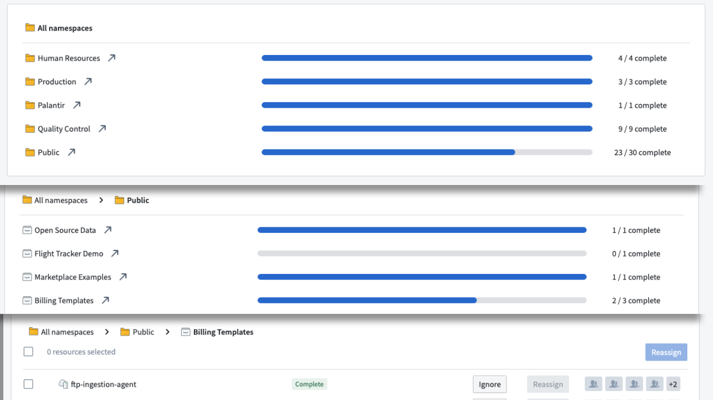
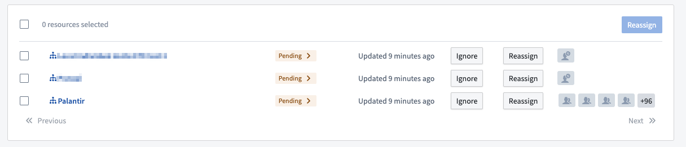
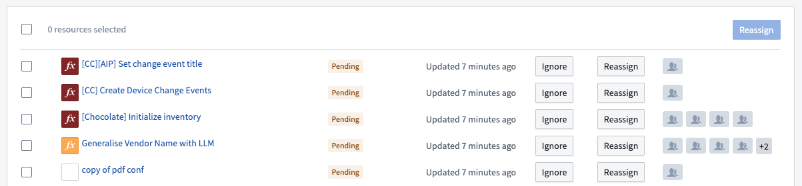

Compass resources can be datasets, code repositories, data connection sources and agents, or any other resource usually accessible through Compass. These resources are displayed in a hierarchical view, first displaying the space, then the Project, then a list of resources.

Enrollments are displayed with a specific  icon.
icon.
Enrollment resources are never updated automatically and must be manually marked as resolved by a Maintenance Operator.
The Pending > label has an arrow indicating that enrollments need to be manually marked as compliant.

Other resources are displayed in a list. Depending on the specific resource type, we may display additional information such as the name of the resource, the type of the resource, the Project it belongs to, and so on.
